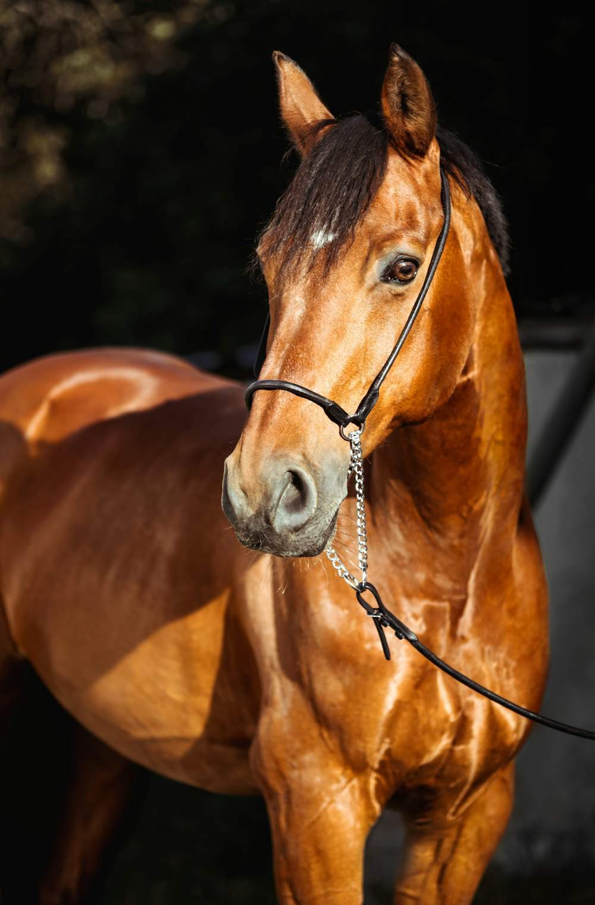
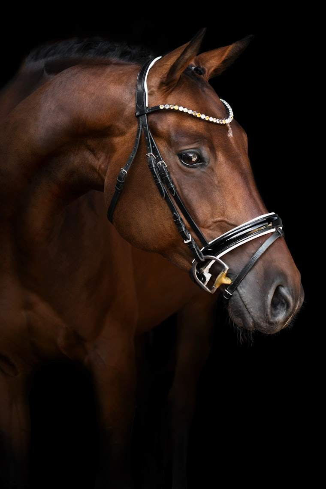

Van de olympische bossen van 1920 tot het St. Hubert van vandaag — één doorlopend verhaal van paarden, families en vakmanschap.
“Meer dan vijftig jaar nadat de eerste paarden hun intrek namen op het domein, blijft St. Hubert een plaats waar traditie en toekomst elkaar ontmoeten.”
Tijdens de Olympische Zomerspelen van Antwerpen worden de terreinen van de Hoogboom Country Club gebruikt voor olympische eventing en diverse schietdisciplines. Hoogboom verwerft een blijvende plaats in de internationale sportgeschiedenis — een traditie die later bijdraagt aan de reputatie van Kapellen als hippische gemeente.
De omgeving van Hoogboom en Kapellen staat bekend om haar landelijke karakter. Paarden spelen een hoofdrol in landbouw, bosbeheer en recreatie. Na de Tweede Wereldoorlog groeit de recreatieve en sportieve paardensport sterk en ontwikkelt de regio zich tot een aantrekkelijke plek voor maneges, fokkers en liefhebbers.
De eerste plannen ontstaan om in Hoogboom een professionele paardenaccommodatie uit te bouwen. De ligging, de rustige omgeving en de bestaande hippische traditie maken van de locatie een ideale plaats voor een manege met nationale ambities.
Het domein krijgt zijn bekende naam: Paardenstal Sint Hubert. Onder leiding van de familie Van Paesschen groeit de accommodatie uit tot een van de modernste hippische centra van Vlaanderen.
Ruime stallen · binnen- en buitenpistes · springterreinen
Sint Hubert organiseert talrijke nationale en internationale springwedstrijden en wordt een vaste waarde op de Belgische hippische kalender. Ruiters uit België, Nederland, Duitsland en Frankrijk vinden hun weg naar Hoogboom.
Ook de fokkerij krijgt internationale uitstraling — onder meer door de BWP-goedgekeurde hengst Landjuweel St Hubert, die de naam wereldwijd bekend maakt.
Naast internationale springwedstrijden komen jeugdwedstrijden, opleidingsdagen, pensionstalling, recreatieve paardensport en fokkerijactiviteiten steeds nadrukkelijker op de voorgrond.
Er komt een einde aan de periode van de familie Van Paesschen. Het domein wordt overgenomen door de familie Knegevitch, die de accommodatie verder moderniseert en uitbreidt. De historische naam Sint Hubert blijft behouden.
Daarnaast verwierf het domein grote bekendheid als opnamelocatie van de populaire Vlaamse jeugdserie Amika van Studio 100. De manege en het domein vormden het decor van 161 afleveringen, verspreid over vier seizoenen, die oorspronkelijk werden uitgezonden van 10 november 2008 tot en met 4 november 2011. De serie groeide uit tot een van de bekendste paardenreeksen in Vlaanderen en Nederland en geniet ook vandaag nog een grote populariteit dankzij heruitzendingen en streaming.
De accommodatie ontwikkelt zich tot een veelzijdig hippisch centrum: naast wedstrijdsport staan ponykampen, manegeactiviteiten, dressuur, pensionstalling, bedrijfsactiviteiten en evenementen centraal. Steeds vaker klinkt de naam Horse & Country Club St. Hubert.
Sint Hubert organiseert het Europees Kampioenschap Springen voor Veteranen en bevestigt opnieuw haar internationale reputatie als organisator van hippische topsportevenementen.

Sint Hubert krijgt bekendheid door initiatieven rond paardenwelzijn. Er wordt een pensioenfonds opgericht voor manegepaarden, zodat paarden na hun sportieve carrière kunnen genieten van een rustige oude dag.
De accommodatie wordt overgenomen door Stephex Group. Er worden plannen ontwikkeld om de locatie verder te moderniseren en uit te bouwen. Hoewel niet alle projecten worden gerealiseerd, betekent deze periode een belangrijke overgang naar een nieuwe toekomst.
Vanaf 1 januari 2024 komt het domein in handen van de familie Ponzo Dieu-de Pundert, die bewust kiest voor het behoud van de rijke geschiedenis en tegelijk investeert in een toekomstgerichte hippische onderneming.
St. Hubert wordt verder ontwikkeld als exclusief hippisch centrum, met een sterke focus op dressuur, opleiding, training, internationale samenwerking en kwaliteitsvolle sportpaarden.
“Met respect voor het verleden en een duidelijke blik op de toekomst wordt verder gebouwd aan een geschiedenis die al meer dan een eeuw teruggaat.”
Vandaag blijft St. Hubert trouw aan zijn oorspronkelijke missie: een plek waar paardenwelzijn, sport, opleiding en gastvrijheid centraal staan.